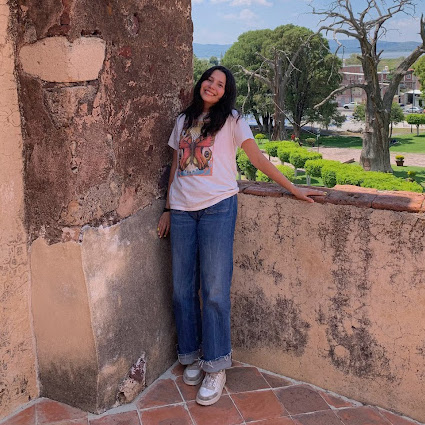

Mariana.
a software developer
Sobre mí
Soy estudiante de Ingeniería en Sistemas de Información, estoy cursando el séptimo semestre y tengo interés en el área de testing y ciberseguridad. Mi mayor fortaleza es la capacidad para aprender y para trabajar en equipo. Estoy en busca de ampliar mis conocimientos y crecer profesionalmente
Habilidades
Hard skills
- Python
- HTML
- Github
Soft skills
- Autoaprendizaje
- Esfuerzo
- Empatia
Idiomas
- Español
- Ingles
- Aleman
Experiencias

Verano de investigación en Edo. Mexico
Internado en Nuevo Mexico
Proyectos
Inventario Farmacias Pitic
Proyecto enfocado en Facilitar el manejo y logística
de productos, con control e información oportuna para los
requerimientos de Farmacias Pitic.
Analisis de Datos: violencia a la mujer
Proyecto enfocado en realizar un algoritmo de regresion
lineal para identificar y analizar el perfil de las víctimas
de violencia con el fin de prevenir el feminicidio.
Algoritmo de Bayes
Proyecto enfocado en realizar un algoritmo de Bayes
para clasificar tumores en malignos y benignos despues de
analizar las caracteristicas de estos.